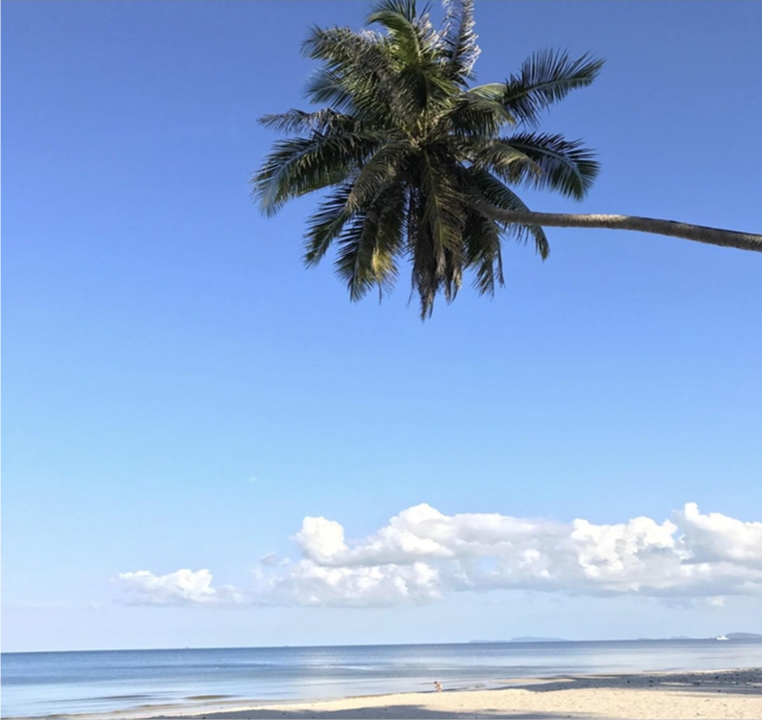

Welcome to Cblue
🌐

As the world confronts the pressing challenges of climate change,
technological innovation, and urbanization, the way we live, build, and
interact with our environment will undergo significant transformations.
Over the next few decades, we will witness innovative changes across
multiple sectors as humanity strives to balance sustainability with the
needs of a growing global population. Three critical pillars of this
evolution include the environment, sustainable building design, and
decarbonization efforts.

Our environment, already under unprecedented strain due to human activity,
will remain at the core of global concern in the coming years. As the impacts
of climate change intensify, we will be forced to rethink how we use and
conserve natural resources. Initiatives aimed at protecting biodiversity,
restoring degraded ecosystems, and rewildingurban spaces will shape how we
approach future land use and city planning.
Environmental adaptation will be crucial in the face of rising sea levels,
more frequent natural disasters, and changing weather patterns. Coastal
cities will adopt strategies to protect themselves from floods by
integrating green infrastructures, such as wetlands and mangroves, while
inland areas will implement drought-resistant landscaping and urban farms
to increase food resilience. As habitats shift due to climate extremes,
conservation efforts will prioritize creating corridors that allow species
to migrate and adapt to their new surroundings.
On the human front, habitats will evolve into multi-functional, sustainable
ecosystems. Cities will increasingly blur the line between built environments
and natural ecosystems, with smart city designs emphasizing urban forests,
green roofs, and community gardens. Nature will no longer be confined to parks
but will become an integral part of daily urban life, offering both aesthetic
and ecological benefits. Buildings will serve as ecosystems themselves,
housing both humans and greenery in symbiotic relationships, where homes
and workplaces clean air, filter water, and even grow food.
The next era of building design will be driven by green architecture, flexibility, and resilience. Future buildings will aim to minimize their environmental impact through the use of sustainable materials such as bamboo, recycled steel, and mycelium-based composites. Key features of tomorrow's sustainable homes will include: - Solar panels and rainwater harvesting systems. - Energy-efficient insulation and natural ventilation. - Passive solar heating to reduce energy consumption. As urban populations continue to rise, modular and prefabricated housing will offer space-efficient solutions for compact living. These adaptive homes will be designed to expand or contract based on changing needs, catering to modern urban lifestyles. We will also see a rise in micro-apartments and co-living spaces as cities become denser. In disaster-prone areas, buildings will incorporate resilient design elements, capable of withstanding floods, earthquakes, and extreme weather events. These adaptive architectures will ensure that homes not only shelter their inhabitants but also protect them from an unpredictable climate.

Building automation systems (BAS) will play a pivotal role in shaping the future of buildings
and housing. With the increasing integration of technology into our everyday lives, smart
homesand smart buildings will become more prevalent. These systems will optimize the
operation of heating, ventilation, lighting, and security, reducing energy consumption
and providing a higher level of comfort and convenience.
At the core of BAS is the Internet of Things (IoT), which enables devices within a building to
communicate with each other and operate autonomously. These systems will learn from the
behaviorof occupants, adjusting settings in real-time to maintain optimal energy efficiency.
For example, intelligent lighting systems will use sensors to detect occupancy and adjust
brightness accordingly, while smart thermostats will analyze weather forecasts to minimize
heating and cooling costs.
Building automation will also enhance the safety and security of homes and businesses.
Real-time monitoring, combined with AI-driven predictive analytics, will enable
systems to detect potential issues like gas leaks, electrical faults, or intrusions
before they escalate into serious problems. Over time, these systems will become more
sophisticated, incorporating features like voice control, gesture recognition, and
biometric authentication.
Building automation systems (BAS) will play a pivotal role in the smart home revolution.
With the rise of the Internet of Things (IoT), homes and buildings will become increasingly
autonomous, optimizing energy use, comfort, and security.
Smart homes will leverage technologies like:
- Intelligent lighting systems that adjust based on occupancy.
- Smart thermostats that analyze weather patterns to minimize energy use.
- Real-time monitoring systems for enhanced safety and security, preventing issues like gas
leaks or electrical faults before they become major problems. As automation technology
evolves, homes will become more intuitive, incorporating voice control, gesture recognition,
and biometric authentication for seamless interaction.


Harness the power of the sun with our cutting-edge solar technologies.
fast, smart charging with features like Wi-Fi connectivity, adjustable power output, and universal compatibility, providing up to 30-50 miles of range per hour for Level 2 chargers or ultra-fast DC charging. It’s weatherproof, safe, and integrates with renewable energy systems, ensuring efficient, eco-friendly charging for all EV models.

Designing eco-friendly buildings that harmonize with nature.
Enhances energy efficiency, reducing operational costs and environmental impact. It also increases indoor comfort, system reliability, and overall building value, creating a more sustainable and cost-effective environment.
Enhances energy efficiency, reducing operational costs and environmental impact. It also improves building management by enabling real-time monitoring, predictive maintenance, and better occupant comfort and security.

Managing, restoring, and protecting natural resources, ecosystems, and biodiversity to reduce pollution and environmental impact. Energy-saving services focus on optimizing energy consumption through efficiency measures, renewable energy solutions, and sustainable practices to reduce costs and environmental footprints.
 - Copy.jpg)
A security system provides critical protection by detecting and deterring unauthorized access, ensuring the safety of property and occupants from potential threats. Additionally, it offers peace of mind with features like real-time monitoring and emergency response capabilities, enhancing home security and business safety.

Enhances energy efficiency, reducing operational costs and environmental impact. It also improves building management by enabling real-time monitoring, predictive maintenance, and better occupant comfort and security.

Managing, restoring, and protecting natural resources, ecosystems, and biodiversity to reduce pollution and environmental impact. Energy-saving services focus on optimizing energy consumption through efficiency measures, renewable energy solutions, and sustainable practices to reduce costs and environmental footprints.

A security system provides critical protection by detecting and deterring unauthorized access, ensuring the safety of property and occupants from potential threats. Additionally, it offers peace of mind with features like real-time monitoring and emergency response capabilities, enhancing home security and business safety.


Project : The Fountain Hatyai
Detail : Design & build of downtown shophouses
with a restauraunt and cafe
Location : Hatyai
Value : THB40,200,000

Project : Loft71
Detail : Design & build of 350-sq.m.
home offices
Location : Ladprao 71
Value : THB30,000,000



Welcome to Cblue

Our Mission
Our mission is to provide the best, state-of-the-art green solutions and
services on time, on budget and with safety and integrity.
Email : ghiscafe@hotmail.com
Phone number : (+66) 081 854 4291
"Head for green
& of course blue"